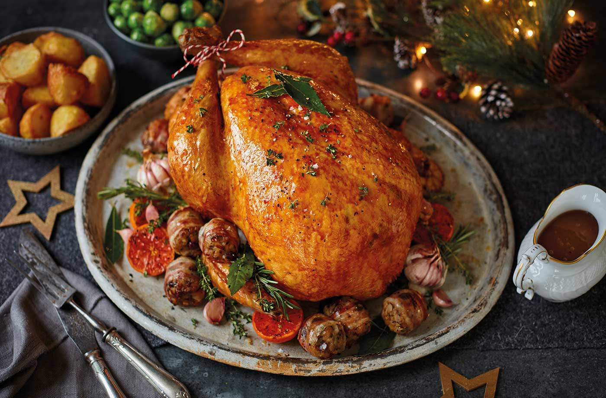

Description
This Scallop Spaghetti with a cream sauce by Chef John is easy to cook and prepare.
Cooking scallops a bit longer gives the texture more tender and moist.
After putting with the sherry sauce the dish is more fragrant and looks delicious.
Ingredients
- 2 tablespoons dried parsley
- 2 tablespoons ground dried rosemary
- 2 tablespoons rubbed dried sage
- 2 tablespoons dried thyme leaves
- 1 tablespoon lemon-pepper seasoning
- 1 tablespoon salt
- 1 (15 pound) whole turkey, neck and giblets removed
- 1 medium orange, cut into 8 wedges
- 1 medium onion, chopped into large pieces
- 1 medium carrot, cut into 1/2-inch slices
- 2 stalks celery, cut into 1/2-inch slices
- 1 (750 milliliter) bottle champagne
- 1 (14.5 ounce) can chicken broth
Steps
- Preheat the oven to 350 degrees F (175 degrees C). Line a roaster with sheets of aluminum foil long enough to wrap around turkey.
- Stir together parsley, rosemary, sage, thyme, lemon-pepper seasoning, and salt in a small bowl.
- Rub herb mixture into the turkey cavity, then stuff with orange wedges, onion, carrot and celery. Tie the legs together with kitchen string, then tuck the wings under the body. Place turkey on the foil in the roasting pan.
- Pour champagne and chicken broth over turkey, making sure to get some liquid in the cavity. Bring aluminum foil up and over the top of turkey and seal; try to keep the foil from touching the turkey.
- Roast turkey in the preheated oven until juices run clear, 2 1/2 to 3 hours. Uncover turkey and continue baking until the skin turns golden brown, 30 to 60 more minutes. An instant-read thermometer inserted into the thickest part of thigh, near the bone, should read 180 degrees F (82 degrees C).
- Remove turkey from the oven, cover with two sheets of aluminum foil, and allow to rest in a warm area before slicing, 10 to 15 minutes.
Reference
- https://www.allrecipes.com/recipe/166160/juicy-thanksgiving-turkey/